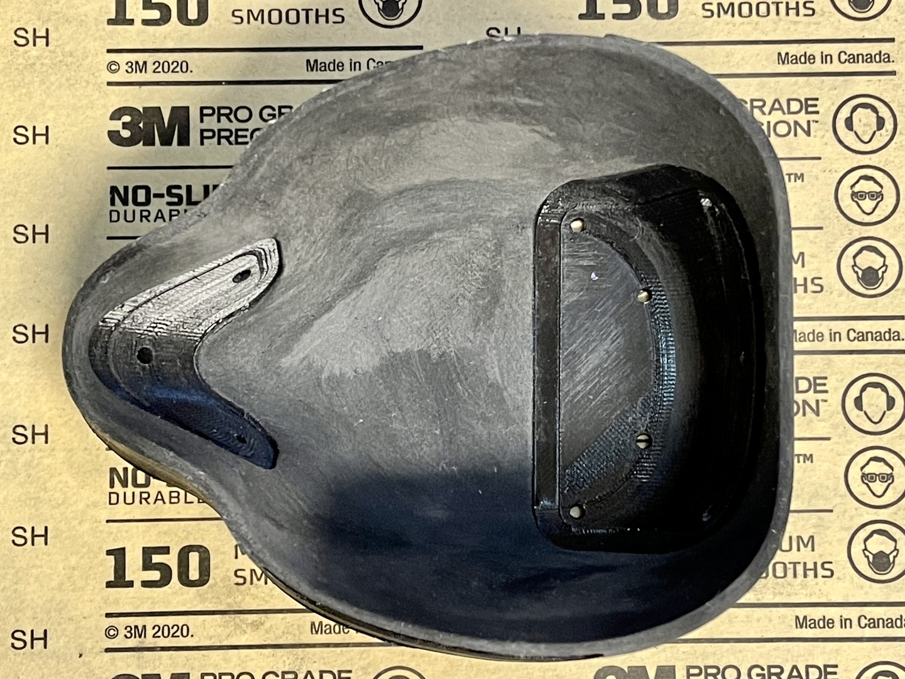
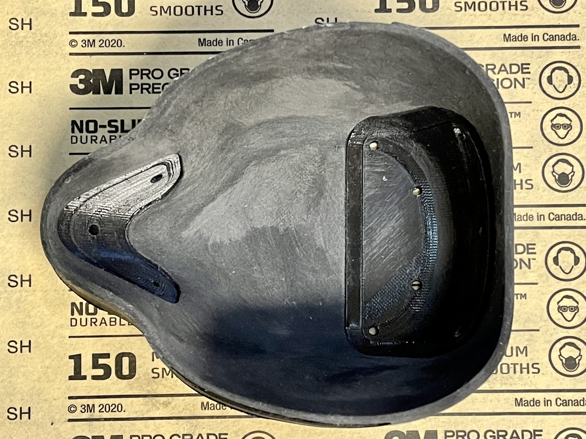
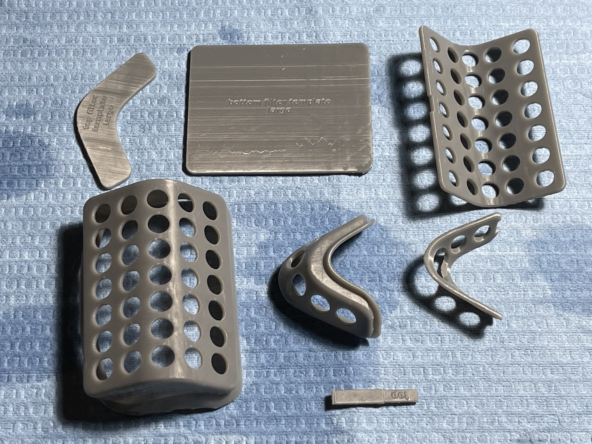

Transparent Reusable Face Mask
Build Instructions
Introduction
During the 2020 COVID-19 pandemic, I (Geert Bevin) have made and donated over 1000 opaque 3D printed masks that have been fit-tested and and particle tested with great results. Using the same basic shape and fundamental design, I spent 4 months designing a transparent mask that fits better, has more airflow and better filtration.
Feature Overview
- works with FaceID, might require setup of alternate appearance
- excellent smile and lip-reading visibility
- great airflow through natural vertical convection (top and bottom openings)
- replaceable filters that can be cut from any flat filter material (shape templates included)
- can be treated with temporary anti-fog spray
- edge is lined with soft weather-sealing foam to create an excellent seal
- flexible but rigid mask shell allows for comfortable facial muscle movements
NO GUARANTEES: This mask is not approved as N95 replacement and is not guaranteed to help against COVID-19 or any other disease.
These instructions will step you through how to make these transparent masks using the tools and equipment that are at my disposal. I've provided the design files and STL exports for you to be able to adapt these instructions to your own environment.
The latest version of these files is freely available under the CC BY-SA 4.0 License from here:
https://github.com/gbevin/transparent-face-mask
Create the Mask Mold
The shell of the mask is designed to be transparent, light, flexible, scratch and shock resistant. The most viable small production technology to achieve this, turned out to be vacuum forming. This heats a sheet of clear PETG plastic and pulls it over a mold by creating a vacuum. Here, this mold is 3D printed and polished in order to achieve the highest possible clarity.
The heat of vacuum forming requires molds to be heat resistant, which needs to be taken into account when selecting the 3D printing technology and material used. Having FDM and MSLA printers available, FDM with polycarbonate filament was the best choice at my disposal. For these molds, I'm using a Raise3D E2 printer and Polymaker PolyMax PC filament.
The print settings are:
- Nozzle: 0.4mm
- Layer: 0.1mm
- Walls: 3
- Infill: 30% Gyroid
- Extruder temperature: 270°C
- Bed temperature: 100°C

Once the mold is finished printing, it's important to sand and polish it to the finest smoothness possible because vacuum forming will transfer even the smallest imperfection to the plastic that's pulled over the mold.
Finishing the mold is a very labor intensive process as you manually go through a series of sand paper grits. I'm using the following in order: 80, 150, 220, 320, 400, 800, 1000, and 3000. Don't press too hard because there is a risk of separating filament layers and creating unintended holes as they come loose during sanding. You can achieve a very smooth finish by using Brasso as the last step with a microfiber cloth.

 



3D Print the Mask Inserts
Inserts will be glued into the transparent shell in order to hold the replaceable filters and to prevent any air from entering or leaving the mask without having gone through filter material. These inserts can be printed with MSLA printers with minimal supports and when using a suitable resin, still provide enough strength and rigidity for daily use. I'm using an Epax3D X1K 6" Mono Printer with the Epax3D Hard and Tough Resin to which I've added additional black UV pigment to create a darker shade of gray.
Once you've finished printing the inserts, grates, and filter templates, remove the supports and thoroughly wash the items in 99% isopropyl alcohol. You'll have to keep your washing liquid fairly clean in order to prevent any residue from accumulating on the surfaces.
Make sure to wear appropriate PPE yourself when handling resin, especially heavy duty nitrile gloves.

Let the items dry for at least 30 minutes when you remove them from the washing liquid. Afterwards you should finish the curing of the resin by exposing the items to a strong UV light for a sufficient amount of time. For both the washing and the curing, I use an AnyCubic Wash & Cure machine.
I cure the items in this device for at least 4 minutes, then turn the items over and put them in for another 4 minutes. Since uncured resin is toxic, you should be absolutely certain that all resin is cured.
Finally, I rinse all the items under warm water to get rid of anything that might still feel sticky. Be careful with your water temperature, because when it's too hot, it will deform the resin and your items will not fit the mask's shell anymore.

Vacuum Form and Trim the Mask Shell
With your mold ready, you can create the transparent mask shells by vacuum forming clear PETG sheets.
I'm using a Mayku Formbox, which is relatively inexpensive and can be hooked up to your existing vacuum cleaner. The PETG sheets should be at least 1mm thick. A thickness of 1.5mm works also but the mask will not as easily adapt to different face shapes and mouth movements anymore due to the increased rigidity. Thinner PETG sheets become too brittle due to the large draw distance between the edges and the front of the mask. The Mayku 1mm Clear Sheets work fine, but you can also order cheaper 0.040" Vivak PETG sheets from many plastic suppliers and have them cut into 9 1/4" x 9 1/4" squares, for instance from Curbell Plastics.
Before using your mold for vacuum forming, you should apply a suitable release agent to it. The first time this might leave residue on the PETG plastic, but it will allow your mask shells to come loose without damaging the mold. I've had good results with the APEL Silicone Mold Release Spray.


Place your plastic sheet in the vacuum former and set it to the appropriate temperature and duration for your material. I set the Formbox to a temperature of 6 for 1.6 minutes. You'll notice when your sheet is warm enough when is creates a nice bell-shaped curve in the middle.

Once your plastic is formed to the mold, wait a few seconds to ensure the plastic has regained some of its rigidity, otherwise you might burn yourself and deform the result by manipulating it too soon. You can roughly cut away the edges around the mask shell so that it's easier to manipulate for the next steps.

Next is one of the most tedious steps of the mask build process. Using a variety of tools, you should cut along the outside edge of the mask shell without creating any jagged incisions. This part of the mask will be the closest to your face, so it's recommended for the cuts to be as clean as possible. When you've cleanly cut along the edge, you should cut out the holes in which the mask inserts will be glued. Once more, you should be very precise because any deviation of the shape that's indicated by the mold will not provide enough support for the mask inserts to naturally hold in place. Finally, don't forget to create holes in the side flaps for the straps to go through.
I use a combination of tools and developed a technique that works for me. I recommend you practice and experiment on a few mask shells for a while.
These are are the tools I use:
- LIVINGO Kitchen Forged Shears Heavy Duty Ultra Sharp Multi-function Stainless Steel Scissors
- SINGER 00558 5-1/2-Inch ProSeries Heavy Duty Scissors with Power Notch
- CUTRA Wondercutter S
- AFA Tooling Deburring Tool with Blade, 10 High-Speed Steel BS1010 Rotary Burr Removal Blades
- Scalpel Sterile Blades #10 10pcs Sterile Individually Foil Wrapped, with #3 Scalpel Knife Handle
- KUCAA Metal Silver Hand-held 1/4 inch 6mm Round Heavy Duty Single Circle Hole Punch


Glue the Seal to the Mask Shell


Insert the Filter and the Grates